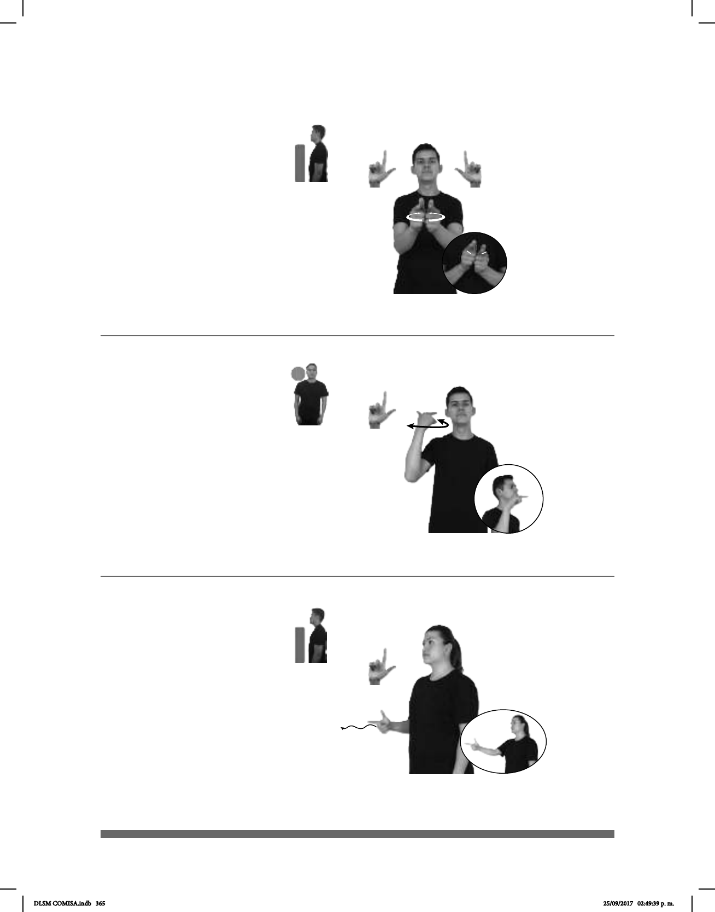

365
(L-75)
Seña: SS
L.1
Las palmas se en-
cuentran frente a frente.
A la altura del pecho.
Las manos parten
de un mismo punto, luego se abren
formando un círculo y vuelven a su
lugar inicial.
sust. m. Conjunto de
personas, animales o cosas reuni-
das, colocadas juntas o relacionadas
entre sí por tener algo en común.
Seña: SM
L.1
Palma hacia la
izquierda.
A la altura de la cadera.
La mano sigue una
trayectoria ondulada hacia enfrente.
Capital del estado Gua-
najuato, perteneciente a los Estados
Unidos Mexicanos.
Seña: SM
L.1
Palma hacia abajo.
A la altura de la oreja.
La muñeca hace girar
la mano sin cambiar su orientación.
Capital del estado
Jalisco, perteneciente a los Estados
Unidos Mexicanos.
(L-74)
(L-73)
_________________o.i.p_
TÚ GRUPO NÚMERO CUÁL
¿Cuál es el número de tu grupo?
GUADALAJARA pro-YO YA CONOCER
allá
CIUDAD BONITA
allá
Ya conozco Guadalajara, es una ciudad bonita.
AÑO-PASADO pro-YO VIAJAR GUANAJUATO
DLSM COMISA.indb 365 25/09/2017 02:49:39 p. m.